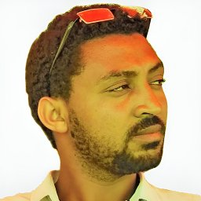

Department of Computer Science and Engineering, Sejong University, Seoul
The Privacy-Sensitive Heterogeneous Hypercomputing (PSHH) Lab, directed by Dr. Nhu-Ngoc Dao, is part of the Department of Computer Science and Engineering at Sejong University in Seoul. Our research explores fundamental challenges at the intersection of programmable networking, mobile computing, and wireless communications, with the goal of enabling intelligent, scalable, and privacy-aware networked systems for the 6G era and beyond. We warmly welcome students from both Korea and around the world who are interested in joining our research group. Please feel free to contact Ngoc for further information.

CeDyNet: Cell-dynamic aerial access point constellations for immersive infotainment mobilities
Sponsor: NRF (South Korea)
Development of end-to-end 8 ultra-communication and networking technologies
Sponsor: IITP (South Korea)
Assisting natural beekeeping in rural and remote areas using LoRa-based IoT and drones
Sponsor: ISIF Asia (APNIC)
Intelligent adaptive bitrate video streaming empowered by cross-tier user-centric edge caching systems
Sponsor: NRF (South Korea)
Hit ratio and content quality tradeoff for adaptive bitrate streaming in edge caching systems
Sponsor: IACF (Sejong University)